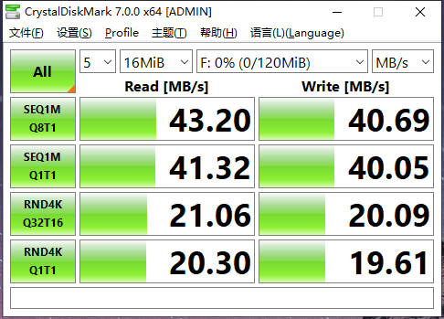

4.4.10. USB驱动性能测试
4.4.10.1. 测试方法
开发板侧
使用
CrystalDiskMark进行测试（软件包在09-usb_test目录下）。开发板输入下面命令:
service adbd stop
cd /tmp
dd if=/dev/zero of=/tmp/700M.img bs=1M count=700
losetup -f /tmp/700M.img
losetup -a
modprobe g_mass_storage file=/dev/loop0 removable=1
PC侧
PC端会出现新磁盘设备的提醒，将其格式化为FAT32格式。
PC打开
CrystalDiskMark，选择刚挂载的X3设备，点击All开始测试，若出现空间不足的提示，则调整测试文件大小。测试完成之后，前两项
SEQ1M*表示顺序读写速度，后面两项RND4K*表示4k小文件随机读写速度。 
图片中的速度仅供参考
4.4.10.2. 测试标准
测试结果取CrystalDiskMark SEQ1MQ8T1读写数据
USB 2.0 : 读写超过40MB/s
USB 3.0 : 读写超过370MB/s